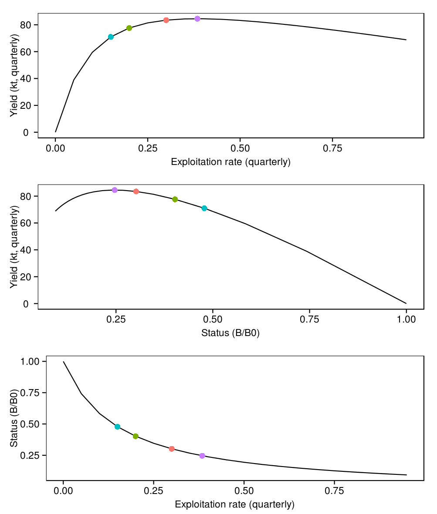
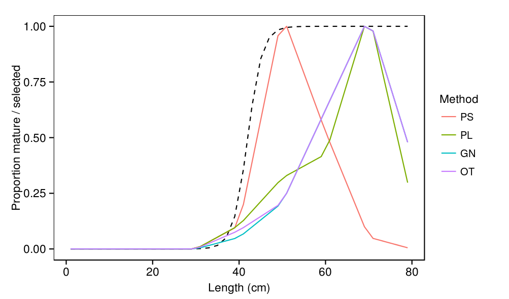
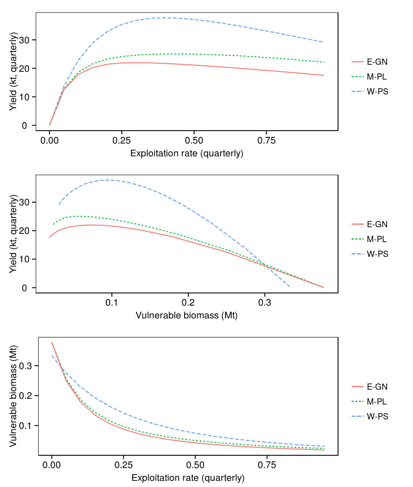
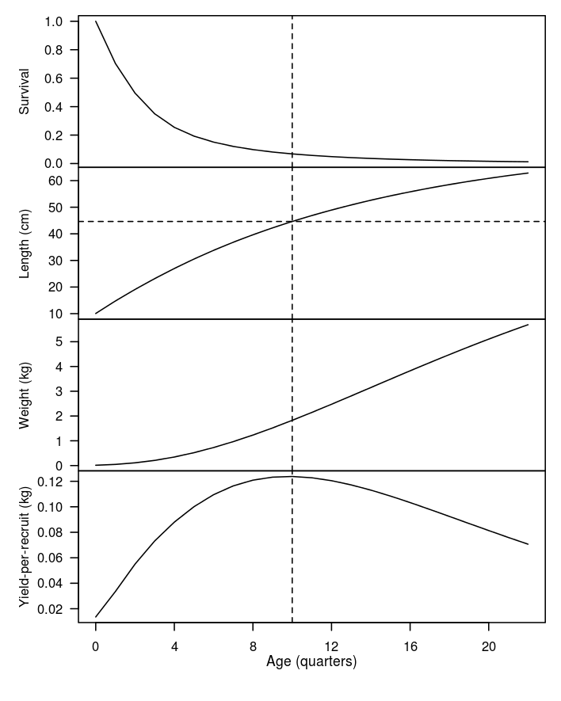

# Load in source and output files
source('../../common.R',local=T)
load(c(
'curve','msy','per_recruit'
),from='../../yield/output')
load(c(
'maturities','selectivities'
),from='../../model/output')
msy <- within(msy,{
status <- biomass_spawners_msy/biomass_spawners_unfished
})
# Find B40% etc and insert MSY
points <- NULL
points <- rbind(points,curve[with(curve,which.min(abs(status-0.3))),c('exprate','f','yield','status')])
points <- rbind(points,curve[with(curve,which.min(abs(status-0.4))),c('exprate','f','yield','status')])
points <- rbind(points,curve[with(curve,which.min(abs(status-0.5))),c('exprate','f','yield','status')])
points <- rbind(points,with(msy,c(e_msy,f_msy,msy,status)))
points$level <- c('0.3','0.4','0.5','MSY')
# Normalise to per recruit
per_recruit$number <- per_recruit$number/per_recruit$number[1]
# Calculate ypr
per_recruit$ypr <- with(per_recruit,number*weight)
# Remove plus age
per_recruit <- per_recruit[-nrow(per_recruit),]
# Find maximum
ypr_max_age <- with(per_recruit,age[which.max(ypr)])
ypr_max_length <- with(per_recruit,length[which.max(ypr)])
Methods
The ioskj.exe executable has a yield task which generates outputs related to:
- the yield curve
- maximum sustainable yield (MSY)
- yield per recruit.
The yield curve is the equilibrium catch as a function of exploitation rate. This is generated by the model's yield_curve method which takes the model to deterministic equilibrium under a range of exploitation rates from 0 to 1. MSY is determined by the model's msy_find method which uses Brent's minimisation algorithm to find the exploitation rate which maximises yield.
In a simple biomass dynamics model the entire fish population is assumed to be selected by the fishery and thus the yield curve and MSY are a function of only the biological parameters. In the current model, yield is a function of the biological parameters, the fishery selectivity parameters and the distribution of fishing effort (i.e. relative exploitation rates) across fisheries (i.e. region/method subsets). If the shape of the selectivity curves or the relative exploitation rates of the fisheries changes then both MSY and the shape of the yield curve will change. Currently, the yield curve and MSY are calculated assuming that the specified exploitation rate applies to the three main fisheries in each region, western purse seine (W-PS), Maldive pole-and-line (M-PL) and eastern gillnet (E-GN). For all other fisheries, the exploitation rate is assumed to be 0.
The model's yield_per_recruit method calculates the numbers at age, mean length and weight at age from which a yield-per-recruit cureve can be derived.
All of these yield related outputs are dependent on the parameters used. The results presented in this section are based on the reference parameter set (read in from files in the parameters/input folder).
The results presented here should be considered preliminary. They are based on the reference parameter set only and ideally their sensitivity to alternative parameter values should be investigated. Also, further checking and testing of the model's equilbrium dynamics used for generating these results should be done. The main intention of this section is to promote discusssion regarding the pros and cons of alternative type of reference points (e.g. v based) for the Indian Ocean skipjack tuna fishery.
Overall yield curve and MSY
This section describes the overall yield curve and reference points related to maximising sustainable yield. Table 1 provides MSY related reference points and Table 2 provides reference points associated with alternative biomass levels. Figure 1 presents plots of various variables related to the yield curve.
| Symbol | Description | Value |
|---|---|---|
| Exploitation rate which produces MSY (quarterly) | 0.384 | |
| Instantaneous rate of fishing mortality which produces MSY (quarterly) | 0.485 | |
| Maximum sustainable yield (quarterly) | 84515.8 | |
| Overall spawner biomass associated with maximum sustainable yield | 493244 | |
| as a percentage of pristine biomass | 24.7 | |
| - | Number of iterations used to find MSY | 8 |
| Biomass level | Exploitation rate (quarterly) | Fishing mortality rate (quarterly) | Yield (quarterly) | Yield/MSY | Effort/Effort at MSY | |
|---|---|---|---|---|---|---|
| 0.384 | 0.485 | 84516 | 1 | 1 | 1 | |
| 0.3 | 0.082 | 83477 | 0.99 | 1.22 | 0.781 | |
| 0.2 | 0.053 | 77618 | 0.92 | 1.63 | 0.52 | |
| 0.15 | 0.039 | 70972 | 0.84 | 1.94 | 0.39 |
p1 = ggplot(curve,aes(x=exprate,y=yield/1000)) + geom_line() + geom_point(data=points,aes(x=exprate,y=yield/1000,colour=level),size=3) + labs(x="Exploitation rate (quarterly)",y="Yield (kt, quarterly)") + theme(legend.position="none") p2 = ggplot(curve,aes(x=status,y=yield/1000)) + geom_line() + geom_point(data=points,aes(x=status,y=yield/1000,colour=level),size=3) + labs(x="Status (B/B0)",y="Yield (kt, quarterly)") + theme(legend.position="none") p3 = ggplot(curve,aes(x=exprate,y=status)) + geom_line() + geom_point(data=points,aes(x=exprate,y=status,colour=level),size=3) + labs(x="Exploitation rate (quarterly)", y="Status (B/B0)") + theme(legend.position="none") multiplot(p1,p2,p3)
Fishery-specific yield curves
Each fishing method has a particular size selectivity (Figure 2) and as such, the yield curve for each fishery will differ in shape. In this section we examine the shape of the yield curve for the three main fisheries. Rather than using the biomass of spawners in these fishery-specific yield curves we use the fishery-specific vulnerable biomass. Vulnerable biomass is directly proportional to catch rates so is a better measure of how alternative exploitation rates may affect the economic performance of the fishery. Each fishery will have a difference vulnerable biomass because of the different selectivity curve.
For W-PS the yeild curve has its peak at high a much higher exploitation rate than for M-PL or E-GN (Figure 3 top). This occurs because the W-PS fishery is selecting for smaller fish. Note also that the vulnerable biomass of all three fisheries is similar at very low exploitation rates. As exploitation rates increase the numbers of older, larger fish decreases and as such the vulnerable biomass of both M-PL ad E-GN decreases (Figure 3 bottom).
print( ggplot() + geom_line(data=maturities,aes(x=length,y=value),colour='black',linetype=2) + geom_line(data=selectivities,aes(x=length,y=value,colour=method)) + labs(x="Length (cm)",y="Proportion mature / selected",colour="Method") )
p1 = ggplot(curve,aes(x=exprate)) + geom_line(aes(y=catch_w_ps/1000,colour="W-PS",linetype="W-PS")) + geom_line(aes(y=catch_m_pl/1000,colour="M-PL",linetype="M-PL")) + geom_line(aes(y=catch_e_gn/1000,colour="E-GN",linetype="E-GN")) + labs(x="Exploitation rate (quarterly)",y="Yield (kt, quarterly)",colour="",linetype="") p2 = ggplot(curve) + geom_line(aes(x=vuln_w_ps/1e6,y=catch_w_ps/1000,colour="W-PS",linetype="W-PS")) + geom_line(aes(x=vuln_m_pl/1e6,y=catch_m_pl/1000,colour="M-PL",linetype="M-PL")) + geom_line(aes(x=vuln_e_gn/1e6,y=catch_e_gn/1000,colour="E-GN",linetype="E-GN")) + labs(x="Vulnerable biomass (Mt)",y="Yield (kt, quarterly)",colour="",linetype="") p3 = ggplot(curve) + geom_line(aes(x=exprate,y=vuln_w_ps/1e6,colour="W-PS",linetype="W-PS")) + geom_line(aes(x=exprate,y=vuln_m_pl/1e6,colour="M-PL",linetype="M-PL")) + geom_line(aes(x=exprate,y=vuln_e_gn/1e6,colour="E-GN",linetype="E-GN")) + labs(x="Exploitation rate (quarterly)",y="Vulnerable biomass (Mt)",colour="",linetype="") multiplot(p1,p2,p3)
Yield per recruit
To further investigate the nature of the yield in the fishery a simple yield per recruit analysis was done Figure 4. This suggests that yield per recruit is maximised at an age of 10 quarters (2.5 years) at a size of about 45cm. Note that this maximum will be highly dependent upon the growth curve and the mortality curve both of which are highly uncertain for fish below 45cm. As such, this analysis should be considered ancillary and treated with caution.
par(mfrow=c(4,1),mar=c(0,5,0,0),oma=c(5,0,1,1),las=1)
with(per_recruit,{
plot(x=age,y=number,xaxt="n",ylab="Survival",type='l')
abline(v=ypr_max_age,lty=2)
plot(x=age,y=length,xaxt="n",ylab="Length (cm)",type='l')
abline(v=ypr_max_age,lty=2)
abline(h=ypr_max_length,lty=2)
plot(x=age,y=weight,xaxt="n",ylab="Weight (kg)",type='l')
abline(v=ypr_max_age,lty=2)
plot(x=age,y=ypr,xaxt="n",ylab="Yield-per-recruit (kg)",type='l')
abline(v=ypr_max_age,lty=2)
axis(side=1,at=seq(0,20,4))
mtext("Age (quarters)",side=1,outer=F,line=2,cex=0.7)
})
